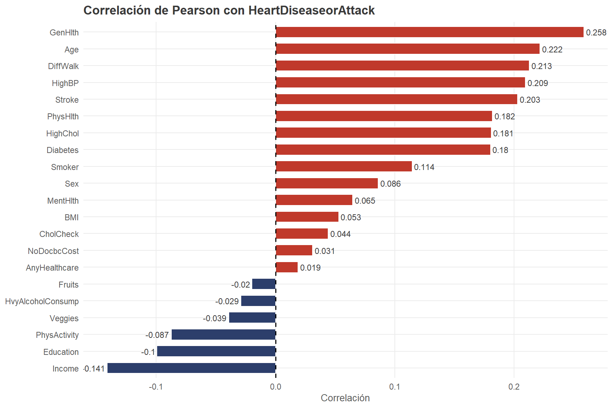
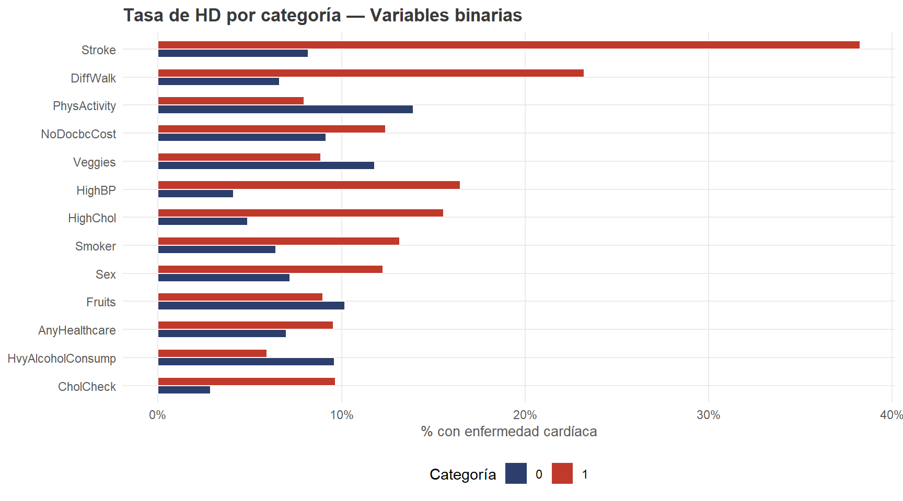
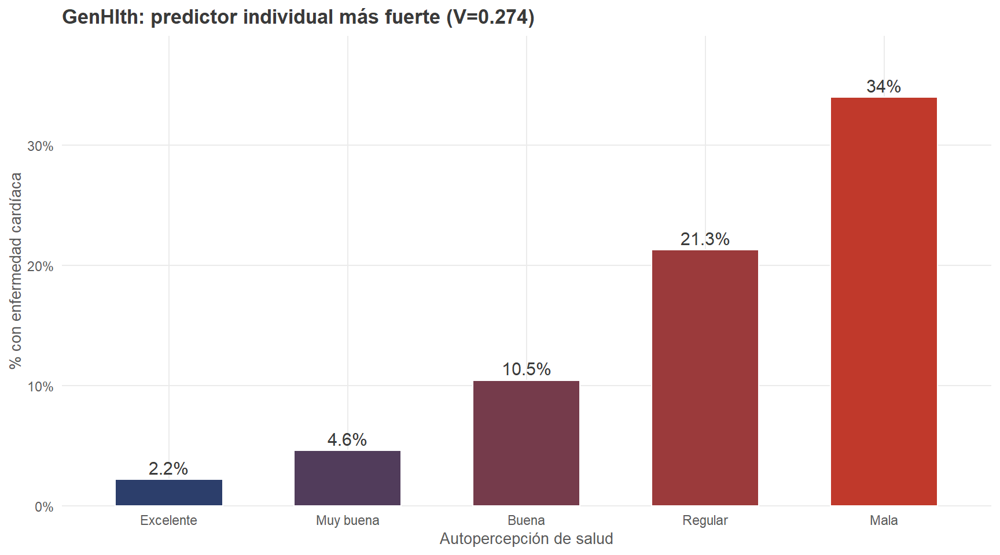
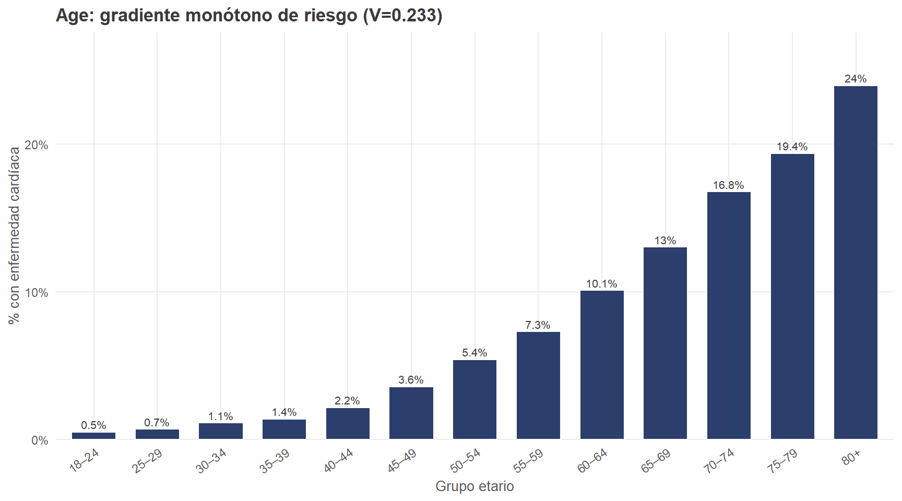
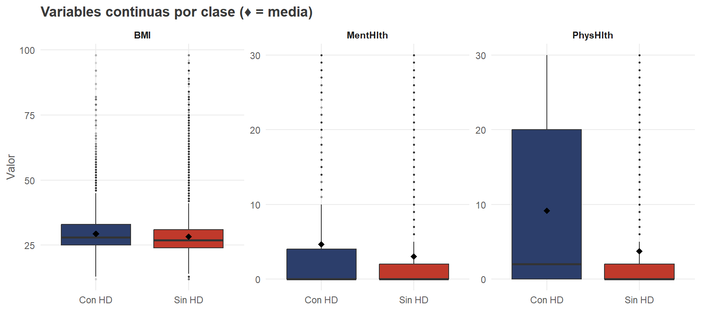
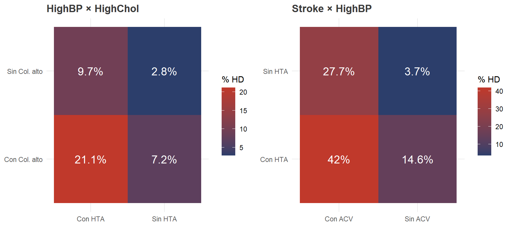
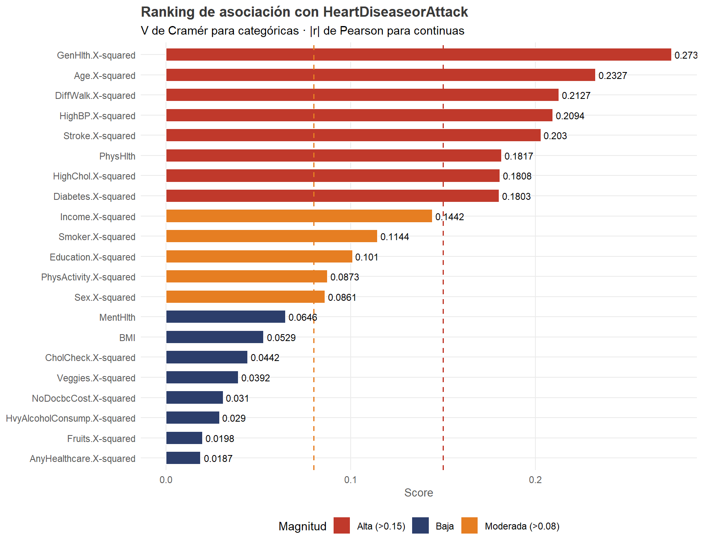

Capítulo 4 Análisis bivariado
Se examina la relación de cada variable predictora con HeartDiseaseorAttack:
- Variables binarias y ordinales → Chi-cuadrado + V de Cramér
- Variables continuas → Mann-Whitney U + |r| de Pearson
4.1 Correlación global con la variable objetivo
corr_vals <- cor(df)[, "HeartDiseaseorAttack"]
corr_vals <- sort(corr_vals[names(corr_vals) != "HeartDiseaseorAttack"], decreasing = TRUE)
df_corr <- data.frame(Variable = names(corr_vals), r = as.numeric(corr_vals))
ggplot(df_corr, aes(x = r, y = reorder(Variable, r), fill = r > 0)) +
geom_col(color = "white", width = 0.65) +
scale_fill_manual(values = c(bajo_color, riesgo_color)) +
geom_text(aes(label = round(r, 3),
hjust = ifelse(r >= 0, -0.1, 1.1)),
size = 3, color = "#3a3a3a") +
geom_vline(xintercept = 0, linetype = "dashed", linewidth = 0.6) +
labs(title = "Correlación de Pearson con HeartDiseaseorAttack",
x = "Correlación", y = NULL) +
theme(legend.position = "none")
Figure 4.1: Correlaciones de Pearson con HeartDiseaseorAttack
Las correlaciones más altas son GenHlth (0.258), Age (0.222), DiffWalk (0.213), HighBP (0.209) y Stroke (0.203). Las correlaciones negativas más relevantes son Income (−0.141) y Education (−0.100).
4.2 Variables binarias
| Variable | Chi² | p-valor | V de Cramér | Tasa (cat. 0) | Tasa (cat. 1) | |
|---|---|---|---|---|---|---|
| X-squared | HighBP | 11119.3 | 0.00e+00 | 0.2094 | 4.12% | 16.47% |
| X-squared1 | HighChol | 8289.3 | 0.00e+00 | 0.1808 | 4.89% | 15.57% |
| X-squared2 | CholCheck | 495.7 | 8.07e-110 | 0.0442 | 2.86% | 9.67% |
| X-squared3 | Smoker | 3322.4 | 0.00e+00 | 0.1144 | 6.44% | 13.17% |
| X-squared4 | Stroke | 10454.1 | 0.00e+00 | 0.2030 | 8.2% | 38.25% |
| X-squared5 | PhysActivity | 1933.3 | 0.00e+00 | 0.0873 | 13.91% | 7.97% |
| X-squared6 | Fruits | 99.4 | 2.11e-23 | 0.0198 | 10.18% | 8.98% |
| X-squared7 | Veggies | 389.2 | 1.26e-86 | 0.0392 | 11.79% | 8.87% |
| X-squared8 | HvyAlcoholConsump | 213.2 | 2.75e-48 | 0.0290 | 9.63% | 5.95% |
| X-squared9 | AnyHealthcare | 89.0 | 3.88e-21 | 0.0187 | 7.01% | 9.54% |
| X-squared10 | NoDocbcCost | 243.8 | 5.89e-55 | 0.0310 | 9.14% | 12.41% |
| X-squared11 | DiffWalk | 11477.7 | 0.00e+00 | 0.2127 | 6.62% | 23.23% |
| X-squared12 | Sex | 1880.4 | 0.00e+00 | 0.0861 | 7.19% | 12.25% |
tasas_bin <- do.call(rbind, lapply(binary_vars, function(v) {
ct <- table(df[[v]], df[["HeartDiseaseorAttack"]])
cram <- bivar_df(v)$cramer
tasa <- prop.table(ct, margin = 1)[, 2] * 100
data.frame(Variable = v,
Categoria = names(tasa),
Tasa = as.numeric(tasa),
V = round(cram, 4))
}))
ggplot(tasas_bin, aes(x = Tasa, y = reorder(Variable, Tasa),
fill = Categoria)) +
geom_col(position = "dodge", width = 0.6, color = "white") +
scale_fill_manual(values = c(bajo_color, riesgo_color)) +
scale_x_continuous(labels = function(x) paste0(x, "%")) +
labs(title = "Tasa de HD por categoría — Variables binarias",
x = "% con enfermedad cardíaca", y = NULL, fill = "Categoría") +
theme(legend.position = "bottom")
Figure 4.2: Tasas de enfermedad cardíaca por variable binaria
Hallazgos clave:
- HighBP (V=0.209): cuadruplica la tasa de HD (16.5% vs 4.1%).
- Stroke (V=0.203): tasa absoluta más alta entre binarias (38.3%).
- DiffWalk (V=0.213): quienes reportan dificultad tienen 3.5× más riesgo.
- Smoker (V=0.114): los fumadores duplican la tasa (13.2% vs 6.4%).
4.3 Variables ordinales
| Variable | Chi² | p-valor | V de Cramér | Tasa mínima | Tasa máxima | |
|---|---|---|---|---|---|---|
| X-squared | GenHlth | 19008.2 | 0.00e+00 | 0.2737 | 2.24% | 34% |
| X-squared1 | Age | 13731.0 | 0.00e+00 | 0.2327 | 0.51% | 23.95% |
| X-squared2 | Education | 2589.8 | 0.00e+00 | 0.1010 | 6.6% | 19.24% |
| X-squared3 | Income | 5277.6 | 0.00e+00 | 0.1442 | 5.07% | 18.65% |
| X-squared4 | Diabetes | 8244.9 | 0.00e+00 | 0.1803 | 7.18% | 22.29% |
genhlth_tasa <- df |>
group_by(GenHlth = factor(GenHlth, levels = 1:5,
labels = c("Excelente","Muy buena","Buena","Regular","Mala"),
ordered = TRUE)) |>
summarise(tasa = mean(HeartDiseaseorAttack) * 100)
ggplot(genhlth_tasa, aes(x = GenHlth, y = tasa, fill = GenHlth)) +
geom_col(color = "white", width = 0.6) +
geom_text(aes(label = paste0(round(tasa,1),"%")),
vjust = -0.4, size = 4, color = "#3a3a3a") +
scale_fill_manual(values = colorRampPalette(c(bajo_color, riesgo_color))(5)) +
scale_y_continuous(labels = function(x) paste0(x,"%"),
expand = expansion(mult = c(0,0.15))) +
labs(title = "GenHlth: predictor individual más fuerte (V=0.274)",
x = "Autopercepción de salud", y = "% con enfermedad cardíaca") +
theme(legend.position = "none")
Figure 4.3: Tasa de HD por nivel de GenHlth
age_tasa <- df |>
group_by(Age = factor(Age, levels = 1:13, labels = age_labels, ordered = TRUE)) |>
summarise(tasa = mean(HeartDiseaseorAttack) * 100)
ggplot(age_tasa, aes(x = Age, y = tasa)) +
geom_col(fill = nude_palette[2], color = "white", width = 0.7) +
geom_text(aes(label = paste0(round(tasa,1),"%")),
vjust = -0.4, size = 2.8, color = "#3a3a3a") +
scale_y_continuous(labels = function(x) paste0(x,"%"),
expand = expansion(mult = c(0,0.15))) +
labs(title = "Age: gradiente monótono de riesgo (V=0.233)",
x = "Grupo etario", y = "% con enfermedad cardíaca") +
theme(axis.text.x = element_text(angle = 35, hjust = 1))
Figure 4.4: Tasa de HD por grupo etario
4.4 Variables continuas
| Variable | Media (sin HD) | Mediana (sin HD) | Media (con HD) | Mediana (con HD) | p-valor MW | |r| Pearson |
|---|---|---|---|---|---|---|
| BMI | 28.27 | 27 | 29.47 | 28 | 1.45e-225 | 0.0529 |
| MentHlth | 3.03 | 0 | 4.67 | 0 | 1.23e-68 | 0.0646 |
| PhysHlth | 3.73 | 0 | 9.15 | 2 | 0.00e+00 | 0.1817 |
df_box <- df |>
select(HeartDiseaseorAttack, all_of(continuous_vars)) |>
mutate(Clase = ifelse(HeartDiseaseorAttack == 1, "Con HD", "Sin HD")) |>
pivot_longer(all_of(continuous_vars), names_to = "Variable", values_to = "Valor")
ggplot(df_box, aes(x = Clase, y = Valor, fill = Clase)) +
geom_boxplot(outlier.size = 0.5, outlier.alpha = 0.15) +
stat_summary(fun = mean, geom = "point", shape = 18, size = 2.5, color = "black") +
scale_fill_manual(values = c(bajo_color, riesgo_color)) +
facet_wrap(~Variable, scales = "free_y") +
labs(title = "Variables continuas por clase (♦ = media)",
x = NULL, y = "Valor") +
theme(legend.position = "none",
strip.text = element_text(face = "bold"))
Figure 4.5: Distribución de variables continuas por clase
4.5 Interacciones entre factores
pivot1 <- df |>
mutate(HighBP_lbl = ifelse(HighBP==1,"Con HTA","Sin HTA"),
HighChol_lbl = ifelse(HighChol==1,"Con Col. alto","Sin Col. alto")) |>
group_by(HighBP_lbl, HighChol_lbl) |>
summarise(tasa = mean(HeartDiseaseorAttack)*100, .groups="drop")
p_int1 <- ggplot(pivot1, aes(x = HighBP_lbl, y = HighChol_lbl, fill = tasa)) +
geom_tile() +
geom_text(aes(label = paste0(round(tasa,1),"%")), color = "white", size = 5) +
scale_fill_gradient(low = bajo_color, high = riesgo_color) +
labs(title = "HighBP × HighChol", x = NULL, y = NULL, fill = "% HD") +
theme(legend.position = "right")
pivot2 <- df |>
mutate(Stroke_lbl = ifelse(Stroke==1,"Con ACV","Sin ACV"),
HighBP_lbl = ifelse(HighBP==1,"Con HTA","Sin HTA")) |>
group_by(Stroke_lbl, HighBP_lbl) |>
summarise(tasa = mean(HeartDiseaseorAttack)*100, .groups="drop")
p_int2 <- ggplot(pivot2, aes(x = Stroke_lbl, y = HighBP_lbl, fill = tasa)) +
geom_tile() +
geom_text(aes(label = paste0(round(tasa,1),"%")), color = "white", size = 5) +
scale_fill_gradient(low = bajo_color, high = riesgo_color) +
labs(title = "Stroke × HighBP", x = NULL, y = NULL, fill = "% HD") +
theme(legend.position = "right")
grid.arrange(p_int1, p_int2, ncol = 2)
Figure 4.6: Efectos sinérgicos entre pares de factores de riesgo
Efectos sinérgicos detectados:
- HighBP × HighChol → 21.1% vs 2.8% (sin ninguno) — diferencia de 7.5×
- Stroke × HighBP → 42.0% — la tasa más alta del análisis
- DiffWalk × GenHlth “Mala” → 36.8%
4.6 Ranking de importancia bivariada
scores <- c(
sapply(c(binary_vars, ordinal_vars), function(v) {
ct <- table(df[[v]], df$HeartDiseaseorAttack)
chi <- chisq.test(ct, correct = FALSE)$statistic
n <- sum(ct)
sqrt(chi / (n * (min(dim(ct)) - 1)))
}),
sapply(continuous_vars, function(v) abs(cor(df[[v]], df$HeartDiseaseorAttack)))
)
df_scores <- data.frame(
Variable = names(scores),
Score = as.numeric(scores),
Tipo = c(rep("Binaria", length(binary_vars)),
rep("Ordinal", length(ordinal_vars)),
rep("Continua", length(continuous_vars)))
) |> arrange(desc(Score))
ggplot(df_scores, aes(x = Score, y = reorder(Variable, Score),
fill = case_when(Score > 0.15 ~ "Alta (>0.15)",
Score > 0.08 ~ "Moderada (>0.08)",
TRUE ~ "Baja"))) +
geom_col(color = "white", width = 0.65) +
scale_fill_manual(values = c("Alta (>0.15)" = riesgo_color,
"Moderada (>0.08)" = "#E67E22",
"Baja" = bajo_color)) +
geom_vline(xintercept = c(0.08, 0.15), linetype = "dashed",
color = c("#E67E22", riesgo_color), linewidth = 0.7) +
geom_text(aes(label = round(Score, 4)), hjust = -0.1, size = 3) +
labs(title = "Ranking de asociación con HeartDiseaseorAttack",
subtitle = "V de Cramér para categóricas · |r| de Pearson para continuas",
x = "Score", y = NULL, fill = "Magnitud") +
theme(legend.position = "bottom")
Figure 4.7: Ranking de asociación de todas las variables con el target